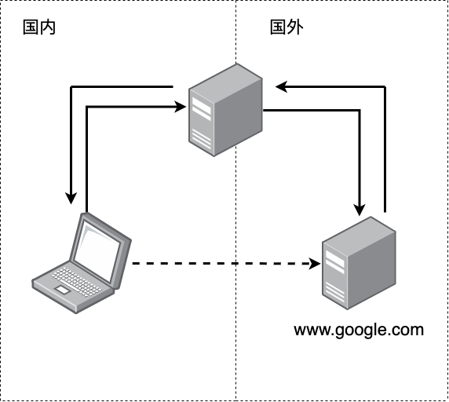
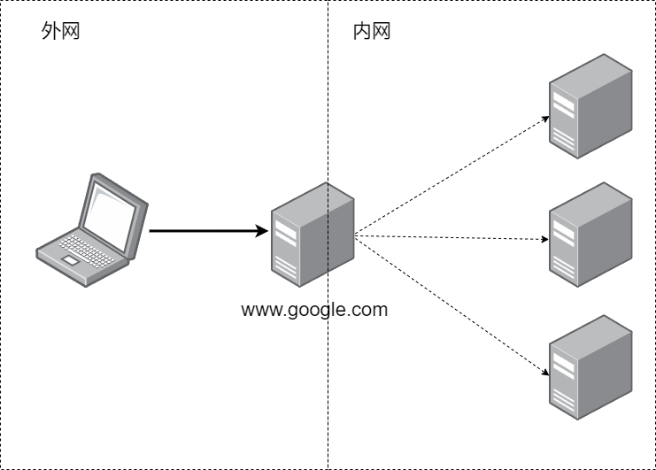

Nginx介绍
Nginx介绍
文章思路：
- 介绍Nginx
- 逐个解释Nginx的核心概念
- 列出Nginx的常用命令
Nginx联合创始人安德鲁·阿列克谢夫（Andrew Alexeev）曾说：Nginx是为对Apache性能不满意的人而构建的。随着Internet需求的变化，Web服务器的工作也在变化。Nginx的构建比以往任何时候都更有效率，更可扩展，更安全，更强大。
Nginx同Apache一样都是一种Web服务器。基于REST架构风格， 以统一资源描述符（Uniform Resources Identifier）URI或者统一资源定位符（Uniform Resources Locator）URL作为沟通依据， 通过HTTP协议提供各种网络服务。
Apache 的发展时期很长，而且是毫无争议的世界第一大服务器。它有着很多优点：稳定、开源、跨平台等等。
它出现的时间太长了，它兴起的年代，互联网产业远远比不上现在。所以它被设计为一个重量级的。它不支持高并发的服务器。在 Apache 上运行数以万计的并发访问，会导致服务器消耗大量内存。操作系统对其进行进程或线程间的切换也消耗了大量的 CPU 资源，导致 HTTP 请求的平均响应速度降低。
这些都决定了 Apache 不可能成为高性能 Web 服务器，轻量级高并发服务器 Nginx 就应运而生了。
Nginx的优势
- Nginx 使用基于事件驱动架构，使得其可以支持数以百万级别的 TCP 连接。
- 高度的模块化和自由软件许可证使得第三方模块层出不穷（这是个开源的时代啊）。
- Nginx 是一个跨平台服务器，可以运行在 Linux、Windows、FreeBSD、Solaris、AIX、Mac OS 等操作系统上。
- 这些优秀的设计带来的极大的稳定性。
Nginx核心概念
- 反向代理
- 负载均衡
- 动静分离
反向代理
理解Nginx的特性首先要了解反向代理.
代理
代理就是在服务器和客户端之间架设一层服务器，代理将会接收客户端的请求并将它转发给服务器，然后将服务器的响应转发给客户端。
不管正向代理还是反向代理，本质上都是实现以上的“代理”功能。
正向代理
正向代理（forward）意思是一个位于客户端和原始服务器（origin server）之间的服务器。由于客户端出于某种原因不能直接和原始服务器通讯，所以客户端会向代理服务器发送请求，并指定目标服务器，然后由代理向原始服务器转交请求并将获得的内容返回给客户端。
此时“代理”是为客户端进行提供服务的，客户端明确的知道自己希望访问的服务地址，但是自己无法直接访问，因此借助代理实现访问。

翻墙就是一个常见的正向代理技术. 由于防火墙设置, 所以我们没有办法直接访问谷歌服务器, 这个时候我们就可以借助代理服务器.
要强调的一点是正向代理对于目标服务器是非透明的，即目标服务器只知道这个服务请求是来自代理服务器的，而对客户端一无所知。
就像我们翻墙之后访问bilibili，bilibili就会认为我们是海外用户
反向代理
反向代理（Reverse Proxy）方式是指以代理服务器来接受internet上的请求，然后将请求转发给内部网络上的服务器，并将从服务器上得到的结果返回给internet上请求链接的客户端，此时代理服务器对外就表现为一个反向代理。
此时“代理”是为目标服务器提供的，客户端此时并不知道实际上自己在请求哪个服务器的服务，他只知道自己在请求代理服务器。

我们再来看一个例子，我们在使用google搜索感兴趣内容时，google需要进行运算，来根据我们给出的关键词搜索内容并强化我们的用户画像，显然，每时每刻都会有大量的类似请求发生。此时，由于硬件的限制，我们无法通过一台服务器就满足算力需求，因此我们会想到：能不能把这些请求均摊给若干个服务器，由这些服务器共同承担计算任务？如果可以的话，要怎么实现呢？
这当然是可以的，而Nginx就可以实现这个设计。
相较于正向代理，反向代理对于客户端是非透明的，即客户端并不知道自己实际上是在请求哪个内网中的服务器的服务。
虽然google一定是通过服务器集群来实现的自身服务的，但是我们仍然可以直接把他当做一台服务器来请求，实际上我们就是在请求google的反向代理服务器
实现反向代理
Nginx实现反向代理很简单，我们通过以下的例子进行简单的解释：
1 | server { |
- 我们通过Nginx部署静态页面，当用户请求是根目录时，我们直接发送静态页面资源
- 我们通过反向代理为
edu下的请求转发到8080端口 - 我们通过反向代理为
vod下的请求转发到8081端口
负载均衡
我们来简单聊聊Nginx实现反向代理中的重要概念——负载均衡。
如果请求数过大，单个服务器解决不了，我们会增加服务器数量，然后讲请求分发到各个服务器上，讲原来请求集中单个服务器的情况改为分发到多个服务器上，这就是负载均衡。
简单的实现
Nginx实现基础的负载均衡很简单，我们可以在配置文件中通过Upstream指定后端服务器地址列表，在server中拦截响应请求，并将请求转发到Upstream中配置的服务器列表：
1 | upstream balanceServer { |
我们为后端服务器集合命名为balanceServer，当用户请求在路径http://fe.server.com/api/下的服务时，Nginx会将请求分发到后端服务器集合上。
调度算法
看了以上的简单实现之后，我们就会自然产生一个疑问，Nginx是如何讲请求分发到后端服务器上的呢？总不能是随机分发吧？
这部分可以适当联系操作系统相关的进程调度算法
Nginx自然是有调度算法在其中的，在此我们介绍两种最常见的调度算法：
- weight轮询（默认算法）：接收到的请求按照权重分配到不同的后端服务器，即使在使用过程中，某一台后端服务器宕机，Nginx会自动将该服务器剔除出队列，请求受理情况不会受到任何影响。这种方式下，可以给不同的后端服务器设置一个权重值(weight)，用于调整不同的服务器上请求的分配率；权重数据越大，被分配到请求的几率越大；该权重值，主要是针对实际工作环境中不同的后端服务器硬件配置进行调整的。ip_hash（常用）：每个请求按照发起客户端的ip的hash结果进行匹配，这样的算法下一个固定ip地址的客户端总会访问到同一个后端服务器，这也在一定程度上解决了集群部署环境下session共享的问题。
- fair：智能调整调度算法，动态的根据后端服务器的请求处理到响应的时间进行均衡分配，响应时间短处理效率高的服务器分配到请求的概率高，响应时间长处理效率低的服务器分配到的请求少；结合了前两者的优点的一种调度算法。但是需要注意的是Nginx默认不支持fair算法，如果要使用这种调度算法，请安装
upstream_fair模块。url_hash：按照访问的url的hash结果分配请求，每个请求的url会指向后端固定的某个服务器，可以在Nginx作为静态服务器的情况下提高缓存效率。同样要注意Nginx默认不支持这种调度算法，要使用的话需要安装Nginx的hash软件包。
动静分离
我们已经介绍了Nginx重要的反向代理和负载均衡的概念和简单实现，现在我们再来了解一下动静分离这个概念。
我们可以简单的讲网络请求分成两种：
- 资源型请求： 请求服务器上的静态资源，比如html、css、js和图片等。
- 计算型请求：请求服务器提供服务，服务器需要进行计算，并将计算结果返回给用户
此时就出现了一种符合直觉的想法：为了加快服务器解析速度，把静态资源和后端服务分开放置，分别由专门的服务器来解析，进而加快解析速度。
显然，我们可以通过Nginx的反向代理功能实现动静分离，但是我们之所以还要强调Nginx的动静分离概念，是因为Nginx同时还是一个强大的静态资源服务器，即Nginx完全可以承担动静分离中的静这部分。
Nginx常用命令
1 |
|